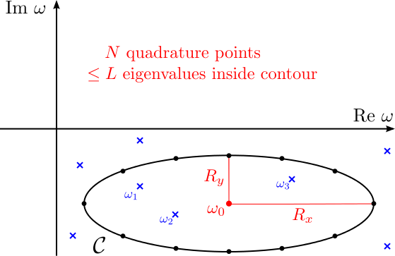
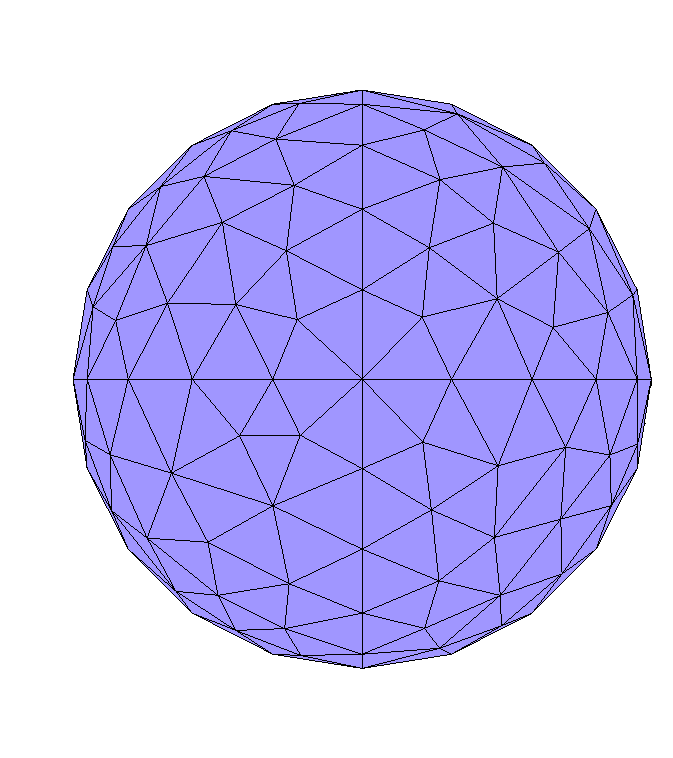
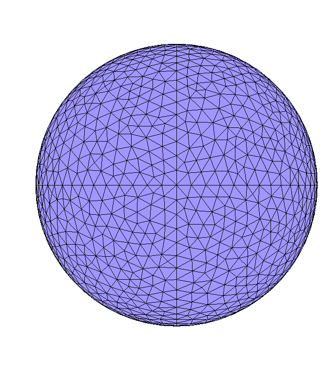
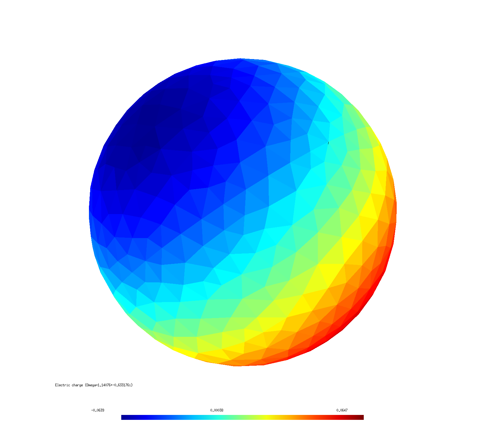
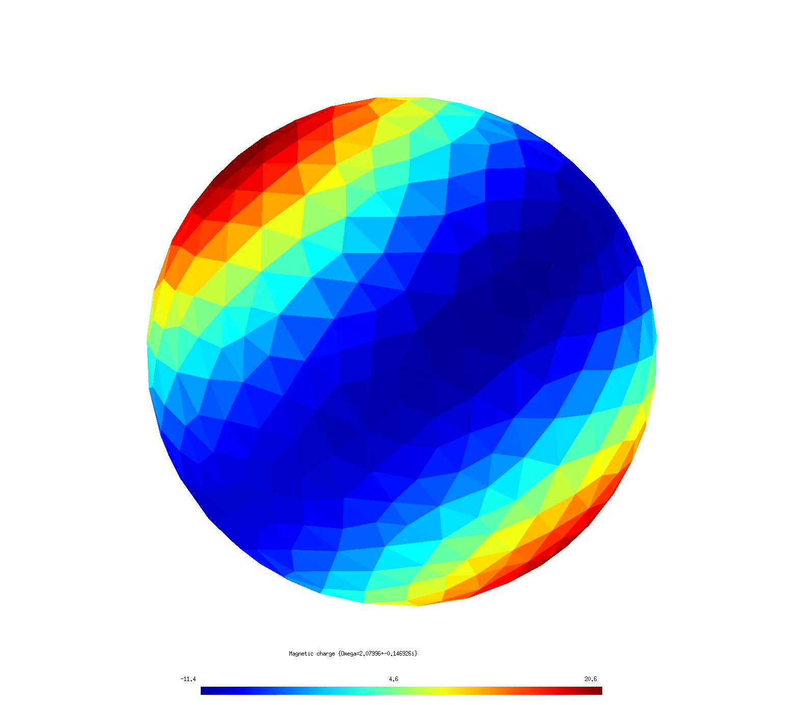

Computing electromagnetic modes with scuff-spectrum
scuff-spectrum is a tool within the scuff-em code suite for computing frequencies and field patterns of resonant modes in arbitrary material geometries. More specifically, scuff-spectrum implements Beyn's contour-integral algorithm for nonlinear eigenproblems, described in more detail below, to pinpoint frequencies at which the BEM system matrix is singular, allowing nonzero surface currents to flow in the absence of external fields. scuff-spectrum reports mode frequencies and, optionally, visualization diagrams and various types of information on the current and field patterns of the corresponding eigenvectors.
Of course, the information reported by scuff-spectrum could also be obtained indirectly from other codes in the scuff-em application suite---for example, the resonant modes of the spherical dielectric cavity shown below would show up as blips in (say) the scattering cross section as the frequency is scanned past the vicinity of the resonance. However, this would be an inefficient and imprecise way to determine resonance frequencies---we would probably wind up computing scattering cross sections at hundreds of frequencies on a dense grid just to approximate the resonance with one- or two-digit accuracy---and it would not yield direct information on the current and field patterns of the corresponding modes. In contrast, the method used by scuff-spectrum is optimized to pinpoint mode frequencies with many-digit accuracy---using only a small number of samples---and, moreover, directly furnishes all information we may need about the current a and field patterns of the modes themselves.
1. Beyn's algorithm: the computational engine behind scuff-spectrum
Mode frequencies as nonlinear eigenvalues
The basic problem solved by scuff-spectrum is to find values of the angular frequency at which the BEM system matrix is singular (has non-empty nullspace), in which case we can find a nonzero vector that solves the equation
This is just the usual linear system of equations solved in scuff-em scattering problems, but now with zero right-hand side, i.e. there is no incident field or other external stimulus exciting the structure; instead, the eigenvector describes a configuration of surface currents that can exist in the absence of external fields---a resonance mode.
Equation (1) resembles an eigenvalue problem, but with the complication that the matrix depends in a complicated nonlinear way on the frequency ; this means we can't simply use standard solvers for linear eigenproblems such as those implemented in lapack.
Beyn's contour-integral algorithm: A lightning overview
Instead, scuff-spectrum implements the contour-integral approach to nonlinear eigenproblems proposed by W. Beyn in this 2012 paper:
-
Wolf-Jürgen Beyn, "An integral method for solving nonlinear eigenvalue problems." Linear Algebra and its Applications 436 3839 (May 2012).
In a nutshell, Beyn's method locates eigenvalues of (1) by evaluating a certain contour integral in the complex plane; the evaluation proceeds via numerical quadrature, sampling the integrand at a total of quadrature points (see figure below). The number of quadrature points, and the shape and location of the contour, are user-tweakable parameters that you will specify as inputs to scuff-spectrum; the basic idea is that Beyn's method will identify all eigenvalues located inside the contour, and will ignore any eigenvalues lying outside the contour, so the challenge from the user's perspective is to have a rough idea of where your eigenvalues will be---and to design contours that enclose the ones you want while omitting the others.
We are being deliberately vague here about precisely what contour integral we are evaluating, as this is not crucial knowledge for using scuff-spectrum (for details, see the original paper linked above). Pretty much all you need to know is this: Evaluating the integrand at each quadrature point involves (a) forming and factorizing the matrix , and then (b) doing some simple linear-algebra calculations involving the solution of a small number (see below) of linear systems of equations of the form for certain given RHS vectors Of course, assembling the system matrix and solving linear systems is exactly what scuff-em does to solve scattering problems, and so mechanically Beyn's algorithm boils down simply to solving integral-equation scattering problems, at some number of frequencies, with some number of RHS vectors at each frequency---not different, in principle, from what we would wind up doing in the brute-force (frequency-scanning) approach to computing mode frequencies discussed above. The difference is that Beyn's algorithm chooses the frequencies at which we calculate, and combines the results of all those calculations, in clever ways to ensure that maximal benefit is extracted from the computations, allowing us to converge quickly to highly accurate values for the eigenvalues in (1). Of course, in addition to the eigenvalue , Beyn's method also gives us the eigenvectors , which we can use in post-processing to do things like visualizing the distribution of currents and fields in the various eigenmodes we find (see examples below).
Beyn's algorithm: Mechanics
Having briefly outlined the idea of Beyn's method---and referring interested readers to Beyn's paper cited above for more detail on the theory---let's now turn to a discussion of the mechanics of running Beyn-method calculations in scuff-spectrum.
The following figure illustrates a typical elliptical contour in the complex- plane over which we might wish to execute Beyn's algorithm. (Contours in scuff-spectrum are always elliptical.)

In this figure, blue crosses indicate eigenvalues of (1); note that there are 3 eigenvalues contained inside the contour ---labeled ---as well as several other eigenvalues not enclosed by the contour, which we do not label as they will be ignored by our calculation. The black dots on the contour indicate quadrature points; the values represented by these points are the complex frequencies at which scuff-scatter will assemble the matrix and do some linear algebra to compute the integrand of the Beyn-method contour integrals.
Items in red in the figure above indicate user-specified inputs to scuff-scatter: these are
-
the complex-valued frequency at which the contour is centered
-
the horizontal and vertical radii (half-minor axes) and of the elliptical contour
-
the number of quadrature points (12 in this case)
-
an integer which should be greater than or equal to the number of eigenvalues you expect to be found within the contour; if scuff-spectrum finds more than this number of eigenvalues, Beyn's method breaks down and must be restarted with a larger value of . (You will get a console warning in this case.)
On the other hand, the algorithm works fine if winds up being larger than the number of eigenvalues found inside the contour, so you should give yourself some leeway by choosing generous values for (typical values might be 10 or 20); higher values of do result in slightly greater computation time, but not much. (More specifically, is the number of linear-system solves of the form that must be done at each quadrature point ; increasing from 10 to 20 or 30 or so does require more solves, but that cost is generally negligible compared to the cost of assembling and factorizing the matrix , so don't bother with excessive parsimony in choosing .)
Running scuff-spectrum with the above inputs as illustrated in the figure above would yield accurate values for the three eigenvalues inside the contour---with the accuracy increasing with the number of quadrature points ---as well as values for the corresponding eigenvectors.
2. scuff-spectrum tutorial: Modes of a spherical dielectric cavity
In this example we'll use the Beyn algorithm as implemented by scuff-spectrum to compute the modes of a spherical dielectric cavity, i.e. a simple dielectric sphere.
Exact (spherical-wave) calculation
For this simple geometry, the mode frequencies can be calculated to any desired numerical precision by looking for poles of the Mie-scattering coefficients for plane waves impinging on a dielectric sphere; the calculation is discussed on page 15 of this memo and implemented by this simple mathematica code For a sphere of relative permittivity (refractive index ), some typical results are:
- For -type (electric multipole) waves with there is a resonance at
where with the sphere radius.
- For -type (magnetic multipole) waves with there is a resonance at b
Next let's ask how well we can reproduce these results in scuff-spectrum.
scuff-spectrum calculation
scuff-em geometry files for spherical cavity
For scuff-spectrum calculations I use a simple .scuffgeo
file describing an isolated sphere with ;
this file is called E4Sphere_501.scuffgeo:
OBJECT Sphere
MESHFILE Sphere_501.msh
MATERIAL CONST_EPS_4
ENDOBJECT
The file Sphere_501.msh to which this refers is a
gmsh
mesh file produced from a gmsh
geometry file named Sphere.geo
by running gmsh -2 Sphere.geo -o Sphere.msh; to investigate
the effect of meshing resolution I will also create a series
of more finely discretized spheres by saying e.g.
gmsh -2 Sphere.geo -clscale 0.75 -o Sphere_Finer.msh
(where the -clscale option, short for "characteristic
length scale", may be used to refine the discretization length
everywhere in the geometry.)
The finest-resolution sphere I will use has interior
edges; for comparison , here are images of the coarsest
and finest sphere meshes I will use.
 
Running scuff-spectrum to pinpoint mode frequencies
Based on the discussion above, I expect to find modes at frequencies near and . Thus, I will use scuff-spectrum to execute Beyn's method for contours centered near these points and enclosing them.
For example, here's a run in which I specify a contour centered at , with horizontal and vertical radii , using =14 quadrature points, and allowing a budget of up to =5 eigenvalues to be found within the contour:
% scuff-spectrum --geometry E4Sphere_501.scuffgeo \
--omega0 1.1-0.63i \
--Rx 0.2 --Ry 0.2 \
--N 14 --L 5
This produces the file E4Sphere_501.ModeFrequencies:
# For contour w0=1.1+-0.63i, Rx=2.000000e-01, Ry=2.000000e-01, N=14, L=5# w0=1.1+-0.63i, Rx=2.000000e-01, Ry=2.000000e-01, N=14, L=5:
# re(w) im(w) estimated error in re(w), im(w)
+1.149426e+00 -6.378139e-01 +3.180420e-05 +7.130373e-05
As the header says, the 4 numbers reported here are the real and imaginary parts of the mode frequency (which is being estimated at ) followed by estimates of the integration error, i.e. the error incurred by approximating the contour integral via numerical quadrature; in this case the error is evidently tiny, and we can be confident that Beyn's method has converged even with just the 14 quadrature points we used. (For larger contours we would probably need more points.)
Mesh convergence
Of course, even if Beyn's method converges to many-digit precision on an eigenmode, we don't necessarily expect the resulting mode frequency to agree with Mie-theoretic predictions to high accuracy, because we are here studying a slightly different structure---namely, a sphere approximated by a discretized version in the form of a 501-sided polygon---but we may expect the mode frequencies to converge toward exact results for spheres as the discretization is refined.
To test this, I repeated the scuff-spectrum calculations above using more finely-meshed spheres. Here are results for mode frequency vs. mesh discretization, characterized by the number N of interior edges in the discretized sphere:
| N | Re() | Im() |
|---|---|---|
| 501 | 1.14943 | -0.63781 |
| 1482 | 1.14076 | -0.63318 |
| 2604 | 1.13877 | -0.63204 |
| 4107 | 1.13787 | -0.63157 |
| inf | 1.13627 | -0.63071 |
| exact | 1.13622 | -0.63063 |
In this table, the first four data rows show
results of scuff-spectrum calculations
for discretized meshes with interior edges.
The column marked inf corresponds to an extrapolation
of the finite- data to the limit
(basically, just fit the data to and
retain only the coefficient.)
The row labeled exact shows
numerically exact predictions of Mie theory.
Here are the analogous results for the -type spherical cavity mode:
| N | Re() | Im() |
|---|---|---|
| 501 | 2.09595 | -0.147858 |
| 1482 | 2.07996 | -0.146926 |
| 2604 | 2.07615 | -0.146679 |
| 4107 | 2.07442 | -0.146564 |
| inf | 2.07151 | -0.146403 |
| exact | 2.07141 | -0.146361 |
These results demonstrate that the Beyn method implemented by scuff-spectrum is able to achieve at least 4-digit precision in determining mode frequencies, despite the modest computational burden.
Running scuff-spectrum to analyze eigenmode field patterns
Having identified the frequencies (eigenvalues) of our structure with high precision, we will next want to look at the surface currents (eigenvectors) and the field patterns they produce. scuff-spectrum offers several command-line options to facilitate this analysis, many of which are similar to the post-processing outputs available in scuff-scatter and other scuff-em codes:
-
--EPFile MyEPFilerequests computation of E and H field components at each evaluation point in a user-specified list of evaluation points. -
--FVMesh MyFVMesh.mshrequests generation of gmsh visualization files showing fields and fluxes on the user-specified visualization mesh (screen)MyFVMesh.msh. -
--CartesianMomentFile MyFilerequests that values of the Cartesian multipole moments corresponding to the eigen-current distribution be written to fileMyFile. -
--SphericalMomentFile MyFileis like the previous option, but for spherical multipole moments. -
--PlotSurfaceCurrentsrequests visualization files showing the distribution of electric and magnetic surface currents on the geometry.
For example, here are images showing the distribution of surface currents for the two eigenmodes captured by the above tables.


The quadrupole structure of the resonance is clearly distinguishable from the dipole structure of the mode.